Nicely Orginized files & Folder
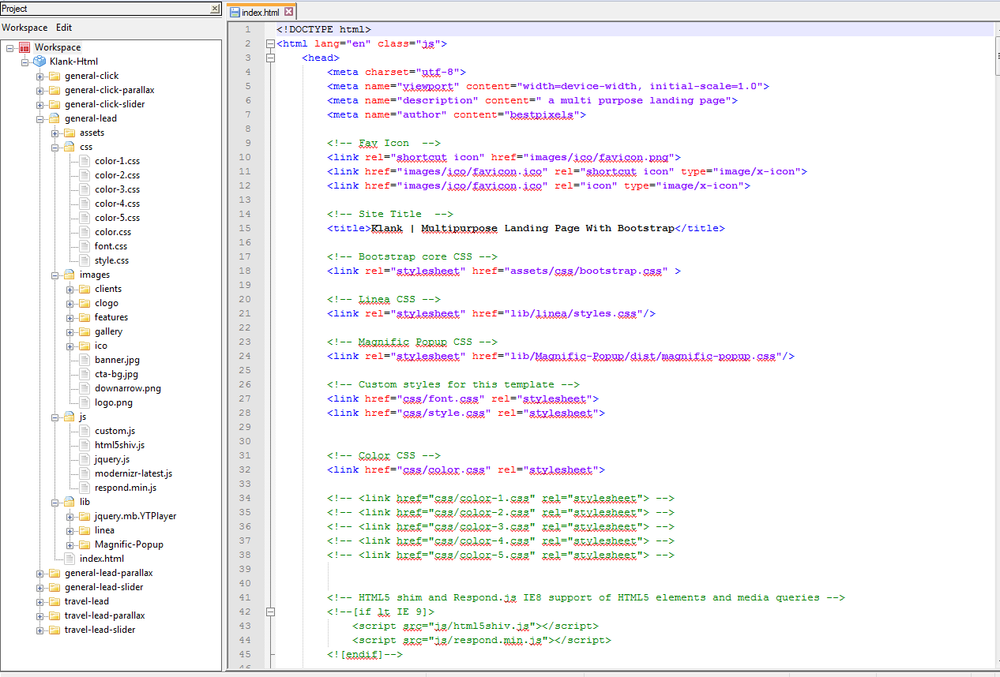
1. RESET CSS 2. Common CSS 3. Header Area 4. Services Area 5. Features Area 6. Gallery Area 7. Video Area 8. Testimonials Area 9. Clients Area 10. Pricing Area 11. CTA Area 12. Footer Area 13. Coustom Media Query CSS
Please Check the SecreenShoot . You Just Need To change Image Url .
or you can just make a png image & named it logo.png then replace it with logo image .
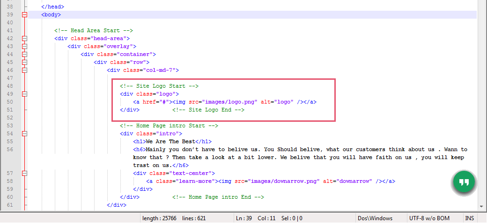
Please go to /lib/Simple-Form & open "mail.php" file
Please Check the SecreenShoot . There is 3 marked section
1 . Change this with your email address.
2 . This will Be your Contact Form Subject
3 . You can change Your Submission Success Message.
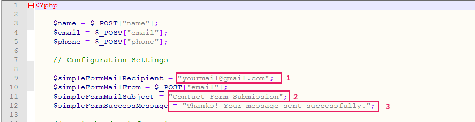
You can Change Colors easily from color.css ..
also you can use our predefined colors by just replacing color stylesheet file like "color.css" with color-1.css .
please take a look at the screenshoot
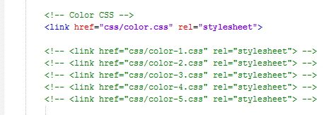
Please find those section in style.css file & replace those image url .
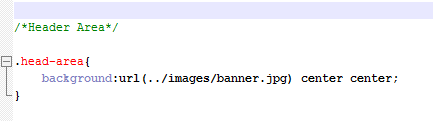
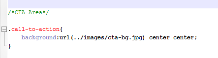
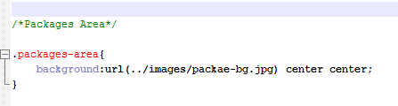
Icons
<i class="icon icon-basic-display"></i>
You Just Need To change "basic-display" This part of this class . Please follow this screen shoot for getting icon class .
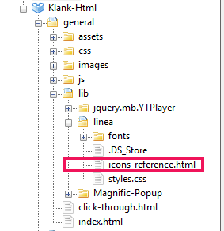
Please check The screen Shoot . You Just Need to Change Those Marked Image url .
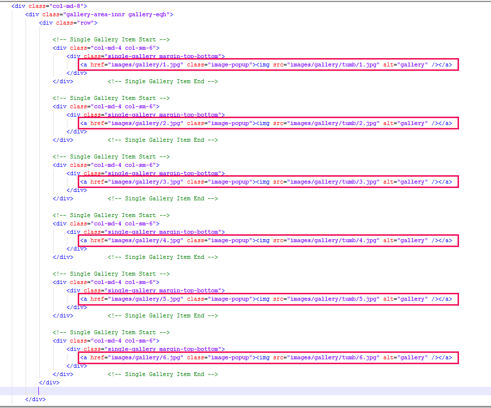
Please Check The ScreenShoot . To change video please replace marked video url with Your Video Url .
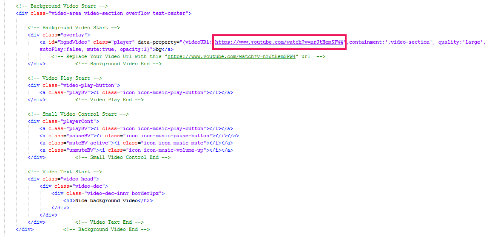
Please Check The ScreenShoot . To change images please replace marked image url with Your image Url . (those code is at the bottom of page)
To change Slider Speed, Interval , Transition please goto the bottom of the page & follow those commented instruction
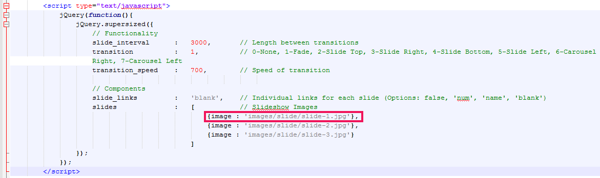
Supersized - Full Screen Background Slideshow
If you need any support with this template, You can place comment on item comment section or you can send me mail through my profile .
Thank You .